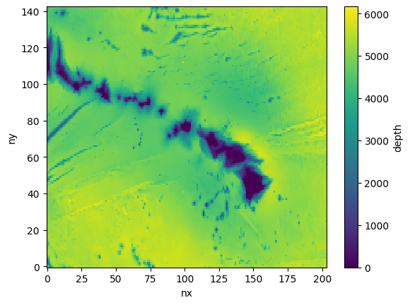

Add Global Subset Grids
Step 1.1: Horizontal Grid
Extract a subgrid from a global grid using the subgrid_from_supergrid method:
[1]:
from CrocoDash.grid import Grid
grid = Grid.subgrid_from_supergrid(
path = "/glade/work/fredc/cesm/grid/MOM6/tx1_12v1/gridgen/ocean_hgrid_trimmed.nc", # supergrid
llc = (16.0, 192.0), # (l)ower (l)eft (c)orner coords
urc = (27.0, 209.0), # (u)pper (r)ight (c)orner coords
name = "hawaii_2"
)
Step 1.2: Topography
[2]:
from CrocoDash.topo import Topo
topo = Topo(
grid = grid,
min_depth = 9.5,
)
[ ]:
bathymetry_path='s3://crocodile-cesm/CrocoDash/data/gebco/GEBCO_2024.nc'
topo.interpolate_from_file(
file_path = bathymetry_path,
longitude_coordinate_name="lon",
latitude_coordinate_name="lat",
vertical_coordinate_name="elevation"
)
Begin regridding bathymetry...
Original bathymetry size: 6.26 Mb
Regridded size: 0.70 Mb
Automatic regridding may fail if your domain is too big! If this process hangs or crashes,open a terminal with appropriate computational and resources try calling ESMF directly in the input directory None via
`mpirun -np NUMBER_OF_CPUS ESMF_Regrid -s bathymetry_original.nc -d bathymetry_unfinished.nc -m bilinear --src_var depth --dst_var depth --netcdf4 --src_regional --dst_regional`
For details see https://xesmf.readthedocs.io/en/latest/large_problems_on_HPC.html
Afterwards, run the 'expt.tidy_bathymetry' method to skip the expensive interpolation step, and finishing metadata, encoding and cleanup.
Regridding successful! Now calling `tidy_bathymetry` method for some finishing touches...
Tidy bathymetry: Reading in regridded bathymetry to fix up metadata...done. Filling in inland lakes and channels... done.
setup bathymetry has finished successfully.
[4]:
topo.depth.plot()
[4]:
<matplotlib.collections.QuadMesh at 0x15051e88a930>
